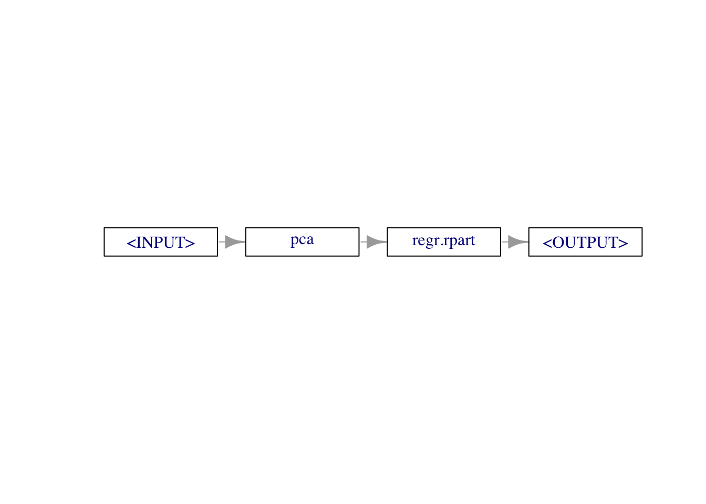
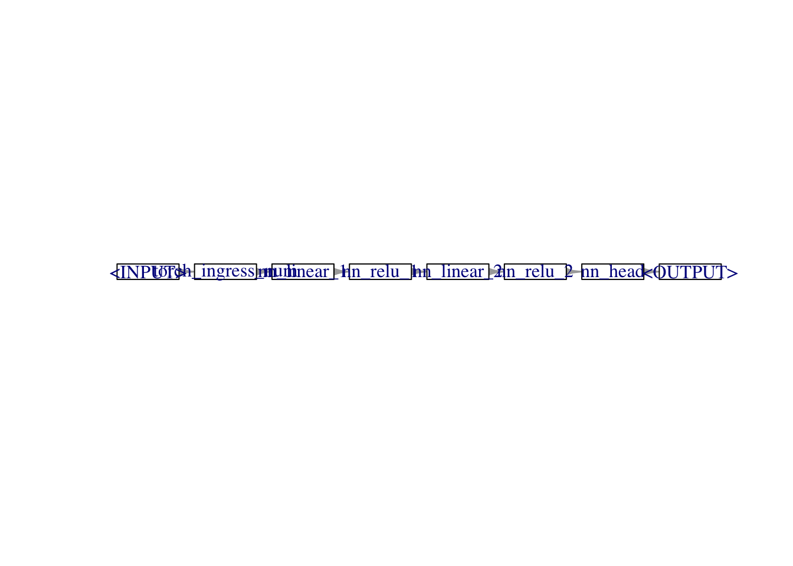

library(mlr3)
tsk("mtcars")<TaskRegr:mtcars> (32 x 11): Motor Trends
* Target: mpg
* Properties: -
* Features (10):
- dbl (10): am, carb, cyl, disp, drat, gear, hp, qsec, vs, wtmlr3torch?mlr3torch is a package that extends the mlr3 framework with deep learning capabilities and allows to apply deep learning techniques to both tabular and non-tabular data. The package implements many routines common in deep learing and allows to focus on the actual problem at hand. Some advantages of using mlr3torch over ‘only’ torch are:
Less Code: Avoid writing repetitive boilerplate code by utilizing predefined network architectures or easily building custom ones tailored to your specific needs.
mlr3 Integration: Especially for users that already have experience with the mlr3 framework, working with mlr3torch should feel familiar. Due to the integration into the mlr3 framework, many mlr3 features like hyperparameter tuning, preprocessing, and resampling are readily available for mlr3torch.
mlr3 RecapBefore we dive into mlr3torch, we will briefly review the core building blocks of the mlr3 machine learning framework.
A task is a machine learning problem on a dataset. It consists of the data itself and some metadata such as the features or the target variable. In order to create an example task that comes with mlr3, we can use the tsk() function:
library(mlr3)
tsk("mtcars")<TaskRegr:mtcars> (32 x 11): Motor Trends
* Target: mpg
* Properties: -
* Features (10):
- dbl (10): am, carb, cyl, disp, drat, gear, hp, qsec, vs, wtTo create a custom Task from a data.frame, we can use the as_task_<type> converters:
head(mtcars) mpg cyl disp hp drat wt qsec vs am gear carb
Mazda RX4 21.0 6 160 110 3.90 2.620 16.46 0 1 4 4
Mazda RX4 Wag 21.0 6 160 110 3.90 2.875 17.02 0 1 4 4
Datsun 710 22.8 4 108 93 3.85 2.320 18.61 1 1 4 1
Hornet 4 Drive 21.4 6 258 110 3.08 3.215 19.44 1 0 3 1
Hornet Sportabout 18.7 8 360 175 3.15 3.440 17.02 0 0 3 2
Valiant 18.1 6 225 105 2.76 3.460 20.22 1 0 3 1tsk_mtcars = as_task_regr(mtcars, id = "mtcars", target = "mpg")
tsk_mtcars<TaskRegr:mtcars> (32 x 11)
* Target: mpg
* Properties: -
* Features (10):
- dbl (10): am, carb, cyl, disp, drat, gear, hp, qsec, vs, wtA learner is a machine learning algorithm that can be $train()ed on a Task and $predict()ed on a Task. We can construct one by passing the name of the learner to the lrn() function.
lrn_tree = lrn("regr.rpart")Next, we need to split the data into a training and test set and apply the learner on the former.
split = partition(tsk_mtcars, ratio = 0.8)
lrn_tree$train(tsk_mtcars, row_ids = split$train)The trained model can be accessed via the $model slot of the learner:
print(lrn_tree$model)n= 26
node), split, n, deviance, yval
* denotes terminal node
1) root 26 1034.6260 20.77692
2) hp>=118 13 118.5877 15.73077 *
3) hp< 118 13 253.9831 25.82308 *In order to make predictions on the test set, we can use the $predict() method of the learner:
predictions = lrn_tree$predict(tsk_mtcars, row_ids = split$test)To make predictions on data.frames we can use the $predict_newdata() method of the learner:
new_data = mtcars[1:2, ]
lrn_tree$predict_newdata(new_data)<PredictionRegr> for 2 observations:
row_ids truth response
1 21 25.82308
2 21 25.82308In order to assess the quality of the predictions, we can use a Measure. mlr3 comes with many predefined measures and we can construct them by passing the name of the measure to the msr() function. Below, we construct the mean squared error measure – which can only be applied to regression tasks – and use it to evaluate the predictions.
mse = msr("regr.mse")
predictions$score(mse)regr.mse
14.52709 For more elaborate evaluation strategies, we can use rsmp() to define a Resampling strategy that can be executed using resample().
rsmp_cv = rsmp("cv", folds = 3)
rr = resample(
task = tsk_mtcars,
learner = lrn_tree,
resampling = rsmp_cv
)
# Aggregate the results
rr$aggregate(msr("regr.mse"))regr.mse
17.95713 In many cases, however, we don’t only fit a single learner, but a whole learning pipeline. Common use cases include the preprocessing of the data, e.g. for imputing missing values, scaling the data or encoding categorical features, but many other operations are possible. The mlr3 extension mlr3pipelines is a toolbox for defining such learning pipelines. The core building block of mlr3pipelines is the PipeOp that can be constructed using the po() function.
library(mlr3pipelines)
pca = po("pca")Just like a learner, it has a $train() and $predict() method and we can apply it to a Task using the $train() and $predict() methods.
pca$train(list(tsk_mtcars))$output
<TaskRegr:mtcars> (32 x 11)
* Target: mpg
* Properties: -
* Features (10):
- dbl (10): PC1, PC10, PC2, PC3, PC4, PC5, PC6, PC7, PC8, PC9pca$predict(list(tsk_mtcars))[[1L]]<TaskRegr:mtcars> (32 x 11)
* Target: mpg
* Properties: -
* Features (10):
- dbl (10): PC1, PC10, PC2, PC3, PC4, PC5, PC6, PC7, PC8, PC9Usually, such PipeOps are combined with a Learner into a full learning Graph. This is possible using the %>>% chain operator.
library(mlr3pipelines)
graph = po("pca") %>>% lrn("regr.rpart")
print(graph)Graph with 2 PipeOps:
ID State sccssors prdcssors
<char> <char> <char> <char>
pca <<UNTRAINED>> regr.rpart
regr.rpart <<UNTRAINED>> pcagraph$plot(horizontal = TRUE)
The resulting Graph can be converted back into a Learner using the as_learner() function and used just like any other Learner.
glrn = as_learner(graph)
glrn$train(tsk_mtcars)mlr3torchmlr3torch builds upon the same ingredients as mlr3, only that we use Deep Learning Learners, and can also work on non-tabular data. A simple example learner is the lrn("regr.mlp") learner, which is a Multi-Layer Perceptron (MLP) for regression tasks.
library(mlr3torch)Loading required package: torchlrn_mlp = lrn("regr.mlp",
neurons = c(50, 50), # Two hidden layers with 50 neurons each
batch_size = 256, # Number of samples per gradient update
epochs = 30, # Number of training epochs
device = "auto", # Uses GPU if available, otherwise CPU
optimizer = t_opt("adam") # Adam optimizer
)This multi layer perceptron can be used just like the regression tree above.
lrn_mlp$train(tsk_mtcars, row_ids = split$train)The trained nn_module can be accessed via the $model slot of the learner:
lrn_mlp$model$networkAn `nn_module` containing 3,151 parameters.
── Modules ─────────────────────────────────────────────────────────────────────
• 0: <nn_linear> #550 parameters
• 1: <nn_relu> #0 parameters
• 2: <nn_dropout> #0 parameters
• 3: <nn_linear> #2,550 parameters
• 4: <nn_relu> #0 parameters
• 5: <nn_dropout> #0 parameters
• 6: <nn_linear> #51 parametersBesides the trained network, the $model of the learner e.g. also contains the $state_dict() and other information.
Having trained the neural network on the training set, we can now make predictions on the test set:
predictions = lrn_mlp$predict(tsk_mtcars, row_ids = split$test)
predictions$score(msr("regr.mse"))regr.mse
67.87358 Using the benchmarking facilities of mlr3, we can also easily compare the regression tree with our deep learning learner:
# Define the resampling strategy
rsmp_cv = rsmp("cv", folds = 3)
# Create a benchmark grid to compare both learners
benchmark_grid = benchmark_grid(
tasks = tsk_mtcars,
learners = list(lrn_tree, lrn_mlp),
resampling = rsmp_cv
)
# Run the benchmark
rr_benchmark = benchmark(benchmark_grid)
# Aggregate the results
results_benchmark = rr_benchmark$aggregate(msr("regr.mse"))
# Print the results
print(results_benchmark) nr task_id learner_id resampling_id iters regr.mse
<int> <char> <char> <char> <int> <num>
1: 1 mtcars regr.rpart cv 3 19.587
2: 2 mtcars regr.mlp cv 3 212.303
Hidden columns: resample_resultmlr3torch also allows to define custom architectures from PipeOps. As a starting point in the graph, we need to mark the entry of the Neural Network using an ingress pipeop. Because we are working with a task with only one numeric feature, we can use po("torch_ingress_num"). There also exists inputs for categorical features (po("torch_ingress_cat")) and generic tensors (po("torch_ingress_ltnsr")).
architecture = po("torch_ingress_num")The next steps in the graph are the actual layers of the Neural Network.
architecture = architecture %>>%
po("nn_linear_1", out_features = 100) %>>%
po("nn_relu_1") %>>%
po("nn_linear_2", out_features = 100) %>>%
po("nn_relu_2") %>>%
po("nn_head")
architecture$plot(horizontal = TRUE)
After specifying the architecture, we need to set the remaining parts for the learner, which are the loss, optimizer and the remaining training confguration such as the epochs, device or the batch size.
graph = architecture %>>%
po("torch_loss", loss = "mse") %>>%
po("torch_optimizer", optimizer = t_opt("adam")) %>>%
po("torch_model_regr", epochs = 10, batch_size = 256)Just like before, we can convert the graph into a Learner using as_learner() and train it on the task:
glrn = as_learner(graph)
glrn$train(tsk_mtcars, row_ids = split$train)In the mlr3 ecosystem, the data of a task is always stored in a data.frame or data.table. In order to be able to work with non-tabular data, the mlr3torch package offers a custom datatype, the lazy_tensor, which can stored in a data.table.
As an example to showcast this, we can use the CIFAR-10 dataset, which is a dataset of 60,000 32x32 color images in 10 classes, with 6,000 images per class.
TODO: Set eval = TRUE when cifar10 is available
tsk_cifar = tsk("cifar10")
tsk_cifarWhen accessing the data, only the images are represented as lazy_tensors, the labels are still stored as a factor column:
tsk_cifar$head()This datatype is very similar to the torch::dataset class we have seen earlier, and a dataset can be converted to a lazy_tensor using the as_lazy_tensor() function.
lazy_tensor = as_lazy_tensor(tsk_cifar)One of the main benefis of the lazy_tensor datatype is that it can be preprocessed using PipeOps just like tabular data. Below, we flatten the images from shape 32x32x3 to shape 3072.
reshaper = po("trafo_reshape", shape = c(NA, 3072))
tsk_cifar_flat = reshaper$train(list(tsk_cifar))[[1L]]
tsk_cifar_flat$head()Note that this transformation is not applied eagerily, but only when the data is actually loaded.